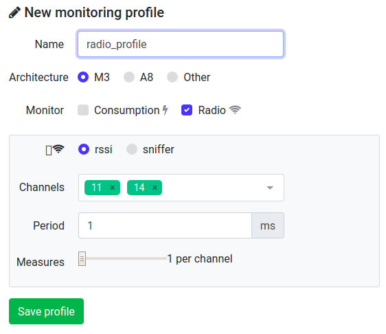
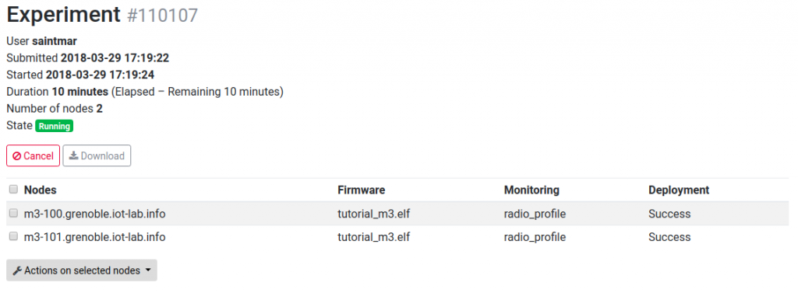

Radio monitoring for M3 nodes
 Difficulty: Medium
Difficulty: Medium
 Duration: 20 minutes
Duration: 20 minutes
Prerequisites: Get and compile a M3 firmware code / Monitor consumption on M3 node during experiment
Description: Each node of an experiment is managed by its Control Node (not accessible by experimenter), that interacts passively or actively. It monitors node consumption, radio signal power (RSSI) and selects power supply (battery or DC with Poe). A Profile represents the Control Node configuration during the experiment. The aim of this tutorial is to create a Profile for monitoring radio activity during an experiment when 2 nodes communicate.
- View the source code of the tutorial firmware and set the radio channel
<login>@<site>:~/iot-lab/parts/openlab$ cd appli/iotlab_examples/tutorial <login>@<site>:~/iot-lab/parts/openlab/appli/iotlab_examples/tutorial$ cat README.md <login>@<site>:~/iot-lab/parts/openlab/appli/iotlab_examples/tutorial$ less main.c
In the source code main.c, you can set the radio channel number taking into account the radio environment (others radio experiments, wifi,…) here:
... // choose channel in [11-26] #define CHANNEL 11 ...
- Compile the tutorial firmware in build.m3/ directory (generate binary files *.elf with radio chipset support at86rf231)
<login>@<site>:~/iot-lab/parts/openlab/build.m3$ make tutorial_m3 <login>@<site>:~/iot-lab/parts/openlab/build.m3$ ls bin/tutorial_m3.elf bin/tutorial_m3.elf
- Now to use the compiled firmware to create an experiment on the web-portal, you should copy it to your computer using scp:
you@yourpc:~$ scp <login>@<site>:~/iot-lab/parts/openlab/build.m3/bin/tutorial_m3.elf tutorial_m3.elf tutorial_m3.elf 100% 99KB 98.9KB/s 00:00 you@yourpc:~$ ls tutorial_m3.elf tutorial_m3.elf
- Log into the Webportal
- Go to Resources menu and click on New Profile
- Choose a Profile name
- Architecture: M3
- Radio rssi mode
- Channels to monitor
- 11 (or whatever you set in step 1.)
- 14 (or any unused channel)
- Period: 1 ms
- Number of measure per channel:1
- Launch a new experiment
- Schedule: set an experiment name and a duration of 10 minutes
- Nodes: Add to experiment (with node properties tab) two nodes with M3 (At86rf231) archi on the Grenoble site
- Add your firmware compiled and radio monitoring profile to your nodes selection
- Submit experiment
- Wait experiment state Running in the Schedule dashboard section. After click on experiment details and visualize which nodes you are booked and verify that you have Success in the deployment result
- Connect to the SSH frontend site with X11Forwarding
ssh -X <login>@grenoble.iot-lab.info
- Connect to the first node’s serial port, for interaction:
<login>@grenoble:~$ nc m3-<id_node1> 20000 IoT-LAB Simple Demo program Type command h: print this help t: temperature measure l: luminosity measure p: pressure measure s: send a radio packet b: send a big radio packet e: toogle leds blinking Type Enter to stop printing this help cmd > - In another terminal, connect to the SSH frontend and from there connect the the other node’s serial port.
ssh <login>@grenoble.iot-lab.info <login>@grenoble:~$ nc m3-<id_node2> 20000
- Send five big radio packets every second (for example) on a node and verify that the other node receive them.On the first terminal, you send five times a big radio packet :
<login>@grenoble:~$ nc m3-<id_node1> 20000 cmd > b cmd > radio > Big packet sent cmd > b cmd > radio > Big packet sent ....
On the second terminal, you will receive the five packets :
<login>@grenoble:~$ nc m3-<id_node2> 20000 cmd > radio > Got packet from c05e. Len: 16 Rssi: -66: 'Hello World!: 4 012345678901234567890123456789012345678' cmd > radio > Got packet from c05e. Len: 16 Rssi: -66: 'Hello World!: 4 012345678901234567890123456789012345678' ....
- The measured RSSI values are stored in your home folder with oml files
<login>@grenoble:~$ less ~/.iot-lab/<experiment id>/radio/m3-<id>.oml protocol: 4 domain: 4291 start-time: 1397726665 sender-id: m3-3 app-name: control_node_measures schema: 0 _experiment_metadata subject:string key:string value:string schema: 2 control_node_measures_radio timestamp_s:uint32 timestamp_us:uint32 channel:uint32 rssi:int32 content: text 0.620337 2 1 1397726665 577557 22 -91 0.620611 2 2 1397726665 578533 26 -91 0.620642 2 3 1397726665 579510 22 -91 0.620672 2 4 1397726665 580486 26 -91 ....
RSSI stands for Received Signal Strength Indication. It is the relative received signal strength in a wireless environment. In IoT-LAB, measured RSSI values provide an indication of the radio power level received by the antenna of the control-node, embedded into and driven by the gateway. The RSSI value is expressed in dBm (Decibel-milliwatts), and represents the power ratio in decibels (dB) of the measured power referenced to one milliwatt (mW). A power level of 0 dBm corresponds to 1mW.
- Plot the file for the node on the receiving side using plot_oml_radio.py. Check that you observe the peaks in the measured RSSI that happen when sending the big packets on channel 11. Check that you observe only noise on channel 14. Depending on the radio environnement perturbations, you should measure a RSSI near -91 dBm with relative noise.
<login>@grenoble:~$ plot_oml_radio -a -i ~/.iot-lab/<experiment id>/radio/m3-<id>.oml
- Enjoy, and play with the system. For example, plotting the RSSI on the sender node, you will also see the five packets, but normally with different strenght.
{kind=link}
{kind=link}
{kind=link}
{kind=link}
Additionnal details
Tunning of radio channel monitoring
When you select the Radio mode rssi checkbox, we have three parameters to set in the panel :
- The list of radio channels to monitor (list_channels). The physical layer (PHY) 802.15.4 divides the bandwith 2400–2483.5 MHz in sixteen channels : 11 to 26. You can share the monitoring time to measure RSSI on several channels
- The Period parameter, expressed in ms, is the time duration of one measure for a channel
- The Number of measure per channel, noted Nb, represents the number of times of measurements per channel
The figures below illustrates some choices of parameters.
{kind=link}